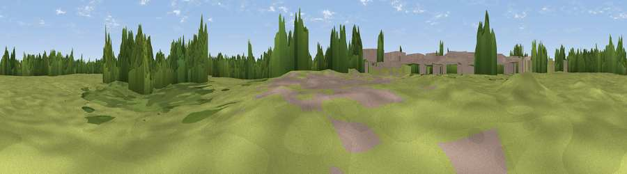

Viewpoint near Stubbington
#45706 in England · top 98% of its area beats it · near Stubbington · access?Where it is
The exact computed spot (SU 57272 01213). Click the marker for map links.
Public access: no public right of way or access land is recorded at this exact spot — it may be on private land. Computed from Natural England's CRoW access layer and OpenStreetMap rights of way — not the legal definitive map. Always verify locally.
The view, rendered

A 360° render of this exact spot computed from the terrain model, tree cover and land cover — summer colours, afternoon light, calibrated against photographs of famous viewpoints. Real trees, hedges and buildings will differ in detail.
The panorama
Grey silhouette: terrain skyline in each direction (720 bearings, Earth curvature and refraction included). Dashed green: skyline with trees (+15 m) and buildings (+8 m) as obstacles. Blue strip: how far the ground is visible on each bearing.
Where the view opens
Wedge length = distance to the farthest visible ground on that bearing (vegetation-aware). Rings at 10, 25 and 50 km.
What fills the view
53% grassland · 31% woodland · 14% built-up · 3% cropland
Angular shares of the visible panorama (visual magnitude), not map area. Landscape diversity 0.47 (0–1 Shannon).
Key numbers
More beautiful places nearby
The staircase of upgrades: each row has a higher view potential than everything closer. Driving times are estimates from straight-line distance, calibrated against real road routing — check an actual route before setting out.
| Place | Direction | Drive | Score |
|---|---|---|---|
| Viewpoint near Stubbington | WNW · 4 km | ~10 min | 40.4 |
| Horsea Island | ENE · 8 km | ~16 min | 57.9 |
| Viewpoint near Southwick | NE · 9 km | ~17 min | 74.3 |
| Viewpoint near Southwick | NE · 9 km | ~18 min | 76.6 |
| Viewpoint near Newchurch | S · 14 km | ~25 min | 77.5 |
| Arreton Down | S · 14 km | ~26 min | 77.7 |
| Viewpoint near Alverstone | S · 14 km | ~26 min | 79.1 |
| Shanklin Down | S · 21 km | ~35 min | 84.7 |
50.80765, -1.18854 · source: osm viewpoint · position refined by local search. Computed location — check access rights before visiting.